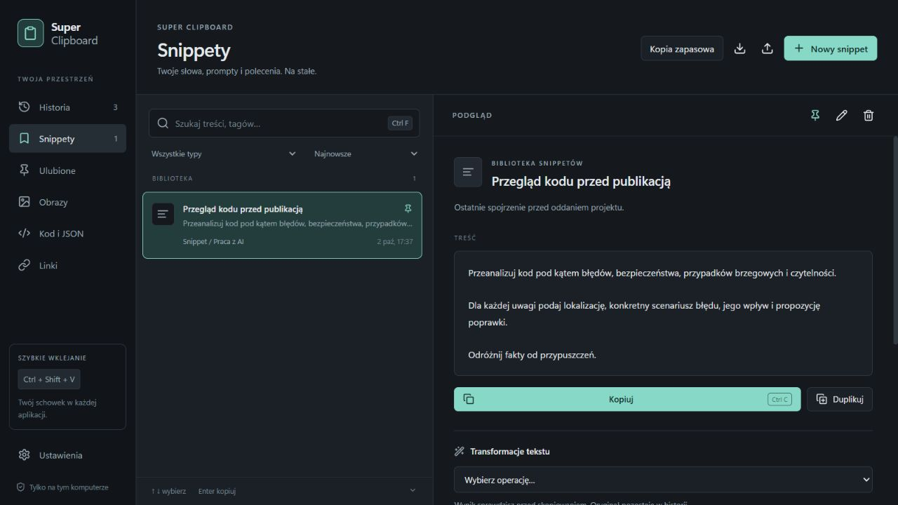
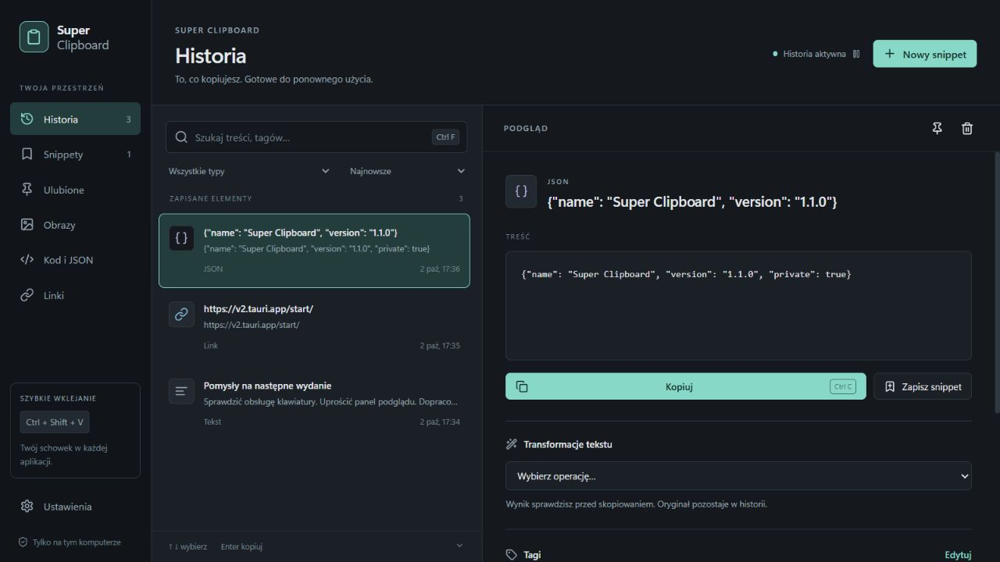

Dane chronione przez Windows
Treści i opisy są szyfrowane lokalnie mechanizmem DPAPI, powiązanym z Twoim kontem Windows.
Ten link. Tamten fragment kodu.
Prompt, który w końcu zadziałał.
Twój schowek może pamiętać więcej.
Ty możesz wrócić do swojej pracy.
Wszystko, co warto
mieć jeszcze raz.

PowiększW pracy wystarczająco dużo rzeczy wymaga Twojej uwagi. Odnajdywanie czegoś, co przed chwilą było w schowku, nie musi być jedną z nich.
Tekst, link, kod, kolor, obraz. Super Clipboard zapisuje historię w tle.
Otwórz szybkie okno. Wpisz fragment tekstu i wybierz właściwy wynik strzałkami.
Enter wkleja wybrany element do poprzedniej aplikacji. Bez odrywania rąk od klawiatury.
Tekst / Linki / Kod i JSON / Obrazy / Kolory / Pliki
Nie pisz tego samego po raz dziesiąty. Zbuduj własną bibliotekę promptów, wiadomości i komend. Nadaj im nazwy, tagi i skróty. Znajduj je wtedy, kiedy są potrzebne.
Zajrzyj do bibliotekiPrzeanalizuj kod pod kątem błędów, bezpieczeństwa i przypadków brzegowych.
Dla każdej uwagi podaj konkretny scenariusz, jego wpływ i propozycję poprawki.
Odróżnij fakty od przypuszczeń.
Dodaj {{imię}} lub {{projekt}}. Uzupełnij wartości tuż
przed użyciem.
Wróć do jednej z 10 ostatnich wersji treści snippetu, gdy poprzednia była lepsza.
Import i eksport JSON oraz szyfrowana kopia biblioteki chroniona Twoim hasłem.
Lista pośrodku, szczegóły obok. Wyszukiwanie, filtry, przypięte wpisy i tagi. Wybierz jasny lub ciemny motyw i urządź schowek po swojemu.

Powiększ ↗Uporządkuj JSON, usuń duplikaty linii albo zbędne spacje. Zmień wielkość liter, zakoduj URL lub Base64. Sprawdź wynik przed skopiowaniem — oryginał zostaje w historii.
{"pomysł":"gotowe"}
{
"pomysł": "gotowe"
}
Bez konta. Bez chmury. Bez telemetrii.
Treść schowka nie trafia na nasze
serwery.
Nie mamy takich serwerów.
Treści i opisy są szyfrowane lokalnie mechanizmem DPAPI, powiązanym z Twoim kontem Windows.
Wyklucz aplikacje i typy danych. Wstrzymaj historię w każdej chwili. Popularne menedżery haseł są domyślnie na liście wykluczeń.
Ustaw limit liczby wpisów, wieku i rozmiaru historii. Przypięte elementy i trwałe snippety zostają pod Twoją kontrolą.
Krótko i bez drobnego druku.
Tak. Możesz bezpłatnie używać jej prywatnie i w pracy, także komercyjnej. Licencja zabrania sprzedaży aplikacji i jej przeróbek. Kod jest publicznie dostępny, ale nie jest objęty licencją open source zatwierdzoną przez OSI.
Pełna treść licencji ↗Super Clipboard jest przeznaczony dla Windows 11 w wersji x64. Korzysta z Microsoft WebView2, który zwykle jest już zainstalowany. Jeśli go brakuje, instalator może pobrać go od Microsoftu. Autostart jest opcjonalny.
Instalator wersji 1.1.0 nie ma płatnego podpisu Authenticode, więc Windows może wyświetlić informację o nieznanym wydawcy. Pobieraj plik z oficjalnego wydania na GitHubie. Możesz zweryfikować jego sumę SHA-256. Nie musisz wyłączać zabezpieczeń systemu.
Sumy kontrolne wydania ↗Nie. Opcjonalny filtr rozpoznaje wybrane wzorce tokenów i kluczy, ale nie zastępuje ostrożności. Wykluczenia działają na poziomie aplikacji, nie pojedynczych kart przeglądarki. W razie potrzeby wstrzymaj historię przed skopiowaniem wrażliwych danych.
Plik .scbackup zawiera bieżącą bibliotekę snippetów, kategorie, tagi, ulubione i szablony. Nie obejmuje historii schowka, ustawień ani poprzednich wersji snippetów. Zabezpiecz go silnym hasłem — zapomnianego hasła nie da się odzyskać. Zwykły eksport JSON nie jest szyfrowany.
Nowe wersje pobierzesz z sekcji Releases na GitHubie. Aplikacja nie pobiera aktualizacji automatycznie. Błędy i pomysły zgłaszaj w Issues; nie dołączaj prywatnej zawartości schowka.
Zgłoś problem lub pomysł ↗Schowek niech pamięta resztę.
Pobierz na WindowsBezpłatnie również do pracy. Instalator nie jest podpisany — Windows może pokazać ostrzeżenie o wydawcy.
Szczegóły wydania i suma kontrolna